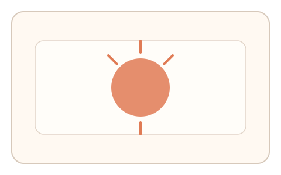
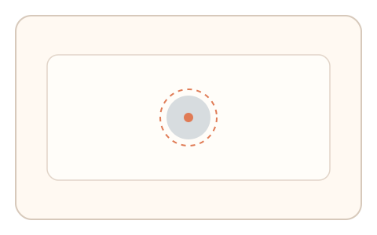
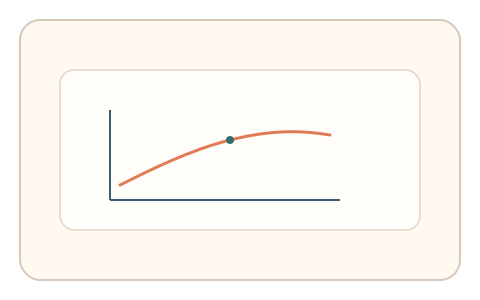

#33
视觉思考范式：时域/适应/残影
已扩展
暗适应恢复点
明亮闪光后呈现低对比目标，记录用户“刚刚看见”的恢复时间分布。
概念原文
明亮闪光后立即呈现低对比目标，用户在“刚刚看见”的瞬间点击。记录恢复时间分布与点击路径。
利用暗适应时间曲线与不稳定阈值，而非视觉识别能力。
研究背景
暗适应过程受视网膜敏感度恢复影响，存在可测的时间曲线与阈值波动。通过测量从强光刺激到目标可见的恢复时刻，可得到稳定的感知特征。
核心机制
- 强光闪烁后立即呈现低对比目标。
- 用户在刚可见时点击确认。
- 记录恢复时间、点击路径与犹豫。
- 分析恢复时间分布与稳定性。
用户流程
- 步骤 1：用户经历短暂强光刺激。
- 步骤 2：低对比目标出现，用户等待可见。
- 步骤 3：用户点击确认，系统记录判定。
判定信号
恢复时间分布
暗适应具有稳定的恢复曲线范围。
确认点击前的微调与停顿
真实可见阈值存在短暂犹豫与回看。
判定逻辑
检查恢复时间是否落在合理区间，并结合点击前的停顿节奏；恢复过快或无犹豫判异常。
对抗面
- 脚本固定等待时间后点击
- 重放真实用户的确认序列
防御与缓解
- 随机化闪光强度与目标对比度
- 引入轻微位置漂移与噪声减少模板化
- 叠加鼠标轨迹与时序特征进行多信号判定
可达性与风险
提供可跳过或低强度模式，避免对光敏或视力受限用户造成不适。
- 强光刺激可能引起不适
- 环境光线差异影响恢复时间
可视化状态

状态 1：强光刺激
短时强光闪烁后切换。

状态 2：恢复等待
低对比目标逐渐可见。

状态 3：恢复判定
记录恢复时间分布与点击。
参考资料
Dark adaptation
说明暗适应的恢复过程。
Visual adaptation
说明视觉适应与阈值变化。